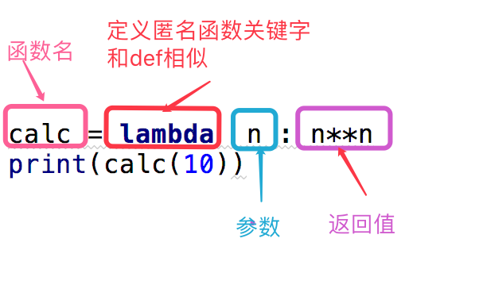

关键字
查看所有关键字方式
import keyword
print(keyword.kwlist)
| 关键字 | 说明 |
|---|---|
| True | 布尔值型,表示真 |
| False | 布尔值型,表示假 |
| None | 一个特殊的常量,None与False不同,是一个Nonetype对象 |
| def | 定义函数的关键字 |
| class | 定义类的关键字 |
| for | 循环可以遍历任何序列的项目,如一个列表或者字符串 |
| if | 用来检测一个条件是否为真的 |
| elif | 和if配合使用的 |
| else | 和if配合使用,当所有条件都不满足执行它 |
| from | 在python中使用import或from....import...来导入相应的模块 |
| import | 在python中使用import或from....import...来导入相应的模块 |
| with | python2.5以后有的,他实质是一个控制流语句,with可以简化try..finally语句,它主要用法是实现一个类的__enter__()和__exit__()方法 |
| as | 取别名使用可以与import或with来结合使用 |
| try | 通常使用try....except语句来处理异常.通常的语句放在try中,而把错误语句放在except中 |
| except | 和try配合使用,except语句用来铺垫异常的处理 |
| finally | 异常处理使用的关键字,用它可以指定最终执行的代码 |
| and | 逻辑判断语句,and左右两边都为真,则判断结果为真,否则都是假 |
| is | python中对象包含三要素:id,type,value 其中:id 用来唯一标识一个对象,type:标识对象的类型,value是对象的值 |
| or | 逻辑判断,两边有一个为真,那么判断结果就为真 |
| in | for....in是另一个循环语句,它在一序列的对象上递归即逐一使用队列中的每个项目。 |
| not | 逻辑判断语句,取反的意思 |
| pass | 什么都不做,作用是弥补语法和空定义上的冲突，它的好处体现在代码的编写过程之中，比如你可以先写好软件的整个框架，然后再填好框架内具体函数和class的内容，如果没有pass编译器会报一堆的错误，让整个开发很不流畅。 |
| while | while语句重复执行一块语句。while是循环语句的一种，while语句有一个可选的else从句。 |
| continue | continue语句被用来告诉Python跳过当前循环块中的剩余语句，然后继续进行下一轮循环。 |
| break | break语句是用来终止循环语句 |
| return | 函数返回值return |
| yield | 用起来像return,其实,yield是告诉程序,要求函数返回的是一个生成器 |
| del | 删除列表或字典一个或多个元素 |
| global | 定义全局变量 |
| nonlocal | 关键字用来在函数或其他作用域使用外层(非全局)变量 |
| lambda | 匿名函数,用来简化那些结构和逻辑简单的函数 |
| assert | 断言,检查条件是否正确,如果不正确就直接终止程序 |
| raise | raise抛出异常 |
内置函数
查看所有内置函数 print(dir(builtins))
常用内置函数
| 函数 | 说明 |
|---|---|
| abs() | 函数返回数字的绝对值 |
| all() | 判断给定的可迭代对象所有元素是否都为True,只要有一个不是那就返回False,元素除了0,空,False都算True |
| any() | 判断给定的可迭代参数都为False,那就返回False,如果有一个True,那就返回True |
| ascii() | 与repr类似,返回包含一个可打印表示的对象的字符串,如果是非ascii字符就会输出\x,\u或\U等字符表示 |
| bin() | 返回一个整数的二进制 |
| bool() | 判断True和False,0为False,1为True |
| bytearray() | 方法返回一个新字节数组。这个数组里的元素是可变的，并且每个元素的值范围: 0 <= x < 256。 |
| bytes() | 把数字或文字转换为bytes类型bytes('哈哈哈',encoding='utf-8') |
| callable() | 检查一个对象是否可以被调用,如果返回True, object仍然可能调用失败；但如果返回False，调用对象ojbect绝对不会成功。 对于函数, 方法, lambda 函式, 类, 以及实现了 call 方法的类实例, 它都返回 True。 |
| chr() | 返回括号中对应的ascii码 |
| classmethod | 类函数,使用方法 @classmethod def func2(cls): |
| compile | str = "for i in range(0,10): print(i)" c = compile(str,'','exec') # 编译为字节代码对象 exec(c) |
| complex() | 没什么用, 函数用于创建一个值为 real + imag * j 的复数或者转化一个字符串或数为复数。如果第一个参数为字符串，则不需要指定第二个参数。。 |
| copyright | 翻译: 交互式提示对象，用于打印许可文本、列表,贡献者和版权声明。 |
| credits | 翻译: 交互式提示对象，用于打印许可文本、列表贡献者和版权声明。 |
| delattr() | 函数用于删除属性 delattr(x, 'foobar') 相等于 del x.foobar。 |
| dict() | 函数用于创建一个字典,返回一个字典 |
| dir() | 函数不带参数时，返回当前范围内的变量、方法和定义的类型列表；带参数时，返回参数的属性、方法列表 , 如果参数包含方法__ dir ()，该方法将被调用。如果参数不包含 dir __()，该方法将最大限度地收集参数信息。 |
| divmod() | 函数把除数和余数运算结果结合起来，返回一个包含商和余数的元组(a // b, a % b) |
| enumerate() | 函数将一个可遍历对象,组合成一个索引序列,返回数据和数据的下标 |
| eval() | 函数用来执行一个字符串表达式，并返回表达式的值。eval("3*6") 会返回18 |
| exec() | 和eval类似,但是可以执行更复杂的python代码eval("""for i in range(10):print(i)""") |
| exit() | 退出程序 |
| filter() | filter()函数用于过滤序列,guolv掉不符合条件的元素, 返回由符合条件元素组成的新列表。 有两个参数:第一个为函数,第二个为序列 |
| float() | 把一个整数或字符串转换为一个浮点型 |
| format() | 格式化字符串,具体使用请看 |
| frozenset() | 返回一个冻结的集合，冻结后集合不能再添加或删除任何元素。 使其变为一个可哈希元素 |
| getattr() | 函数用于返回一个对象属性值。 |
| globals() | 函数会以字典类型返回当前位置的全部全局变量 |
| hasattr() | 判断对象是否包含对应的属性,返回True和False |
| hash() | 用于获取一个对象(字符串或数值)的哈希值 |
| help() | 函数用于查看函数或模块用途的详细说明 |
| hex() | 将10进制转换为16进制 |
| id() | 函数用于获取对象的内存地址 |
| input() | 接收一个标准输入数据,返回为string类型 |
| int() | 把对象装换为整数类型 |
| isinstance() | 判断一个实例对象与类的关系 |
| issubclass() | 函数判断类与类的关系 |
| iter() | 用来生成一个迭代器 |
| len() | 计算元素个数的列表 |
| license() | 没用, 交互式提示对象，用于打印许可文本、列表,贡献者和版权声明 |
| list() | 返回一个列表 |
| locals() | 函数会以字典类型返回当前位置的全部局部变量。 |
| map() | 会根据提供的函数对指定序列做映射。 返回值是迭代器 |
| max() | 返回给定参数的最大值,参数可以为序列 |
| min() | 返回给定参数的最小值,参数可以为序列 |
| memoryview() | 函数返回给定参数的内存查看对象(Momory view)。 所谓内存查看对象，是指对支持缓冲区协议的数据进行包装，在不需要复制对象基础上允许Python代码访问。 |
| next() | 返回迭代器的下一个项目 |
| object() | 初始化函数 |
| oct() | 将一个整数装换为8进制 |
| open() | 函数用于打开一个文件，创建一个 file 对象，相关的方法才可以调用它进行读写。 |
| ord() | 把ascii码对应的数字 |
| pow() | 求x的y次方pow(x,y) |
| print() | 打印 |
| property() | 把类方法变为一个属性:@property @x.setter 和@x.deleter |
| quit() | 退出 |
| range() | 函数可创建一个整数列表,一般用在for循环中 |
| repr() | 函数将对象转化为供解释器读取的形式,返回一个string |
| reversed() | 翻转,返回一个反转的迭代器 |
| round() | 返回浮点数x的四舍五入值,round( 122.00056,3 )返回122.0 |
| set() | 创建一个集合 |
| setattr() | 设置属性和值 setattr(a, 'bar', 5) |
| slice() | 函数实现切片对象，主要用在切片操作函数里的参数传递 |
| sorted() | 函数对所有可迭代的对象进行排序操作 |
| @staticmethod | 设置一个静态类方法 |
| str() | 装换为字符串类型 |
| sum() | 对序列进行求和计算 |
| super() | 执行他的上一层继承对象.mro, |
| tuple() | 转换为元祖类型 |
| type() | 返回这个对象的类型 |
| vars() | 函数返回对象object的属性和属性值的字典对象。 |
| zip() | 函数用于将可迭代的对象作为参数，将对象中对应的元素打包成一个个元组，然后返回由这些元组组成的列表。如果各个迭代器的元素个数不一致，则返回列表长度与最短的对象相同，利用 * 号操作符，可以将元组解压为列表。 |
| reduce() | 函数会对参数序列中的元素进行累积 |
下划线的方法
| 函数名 | 说明 |
|---|---|
| build_class | 未知 |
| debug | 未知 |
| doc | 查看类的说明或详情 |
| import | 函数用于动态加载类和函数 。 |
| loader | 未知 |
| name | 如果在当前文件运行,返回__ main __ |
| package | 未知,返回一个None |
| spec | 未知 |
报错函数
有时间整理:'ArithmeticError', 'AssertionError', 'AttributeError', 'BaseException', 'BlockingIOError', 'BrokenPipeError', 'BufferError', 'BytesWarning', 'ChildProcessError', 'ConnectionAbortedError', 'ConnectionError','ConnectionRefusedError', 'ConnectionResetError','DeprecationWarning', 'EOFError', 'Ellipsis','EnvironmentError', 'Exception', 'False', 'FileExistsError','FileNotFoundError', 'FloatingPointError', 'FutureWarning', 'GeneratorExit', 'IOError', 'ImportError', 'ImportWarning','IndentationError', 'IndexError', 'InterruptedError', 'IsADirectoryError','KeyError', 'KeyboardInterrupt', 'LookupError', 'MemoryError', 'ModuleNotFoundError', 'NameError', 'None', 'NotADirectoryError', 'NotImplemented', 'NotImplementedError', 'OSError', 'OverflowError', 'PendingDeprecationWarning', 'PermissionError', 'ProcessLookupError', 'RecursionError', 'ReferenceError', 'ResourceWarning', 'RuntimeError', 'RuntimeWarning', 'StopAsyncIteration', 'StopIteration', 'SyntaxError','SyntaxWarning', 'SystemError', 'SystemExit', 'TabError', 'TimeoutError','True', 'TypeError', 'UnboundLocalError', 'UnicodeDecodeError', 'UnicodeEncodeError', 'UnicodeError', 'UnicodeTranslateError', 'UnicodeWarning', 'UserWarning', 'ValueError', 'Warning', 'WindowsError', 'ZeroDivisionError'
匿名函数

递归函数
import sys
print(sys.setrecursionlimit(100000)) 设置最大递归深度
递归需要有一个终止条件
def age(n):
if n == 1:
return 40
else:
return age(n-1)+2
print(age(4))
偏函数
from functools import partial
def xx(n,x):
print(n,x)
aa = partial(xx,11)
偏函数是自己给他添加一个值